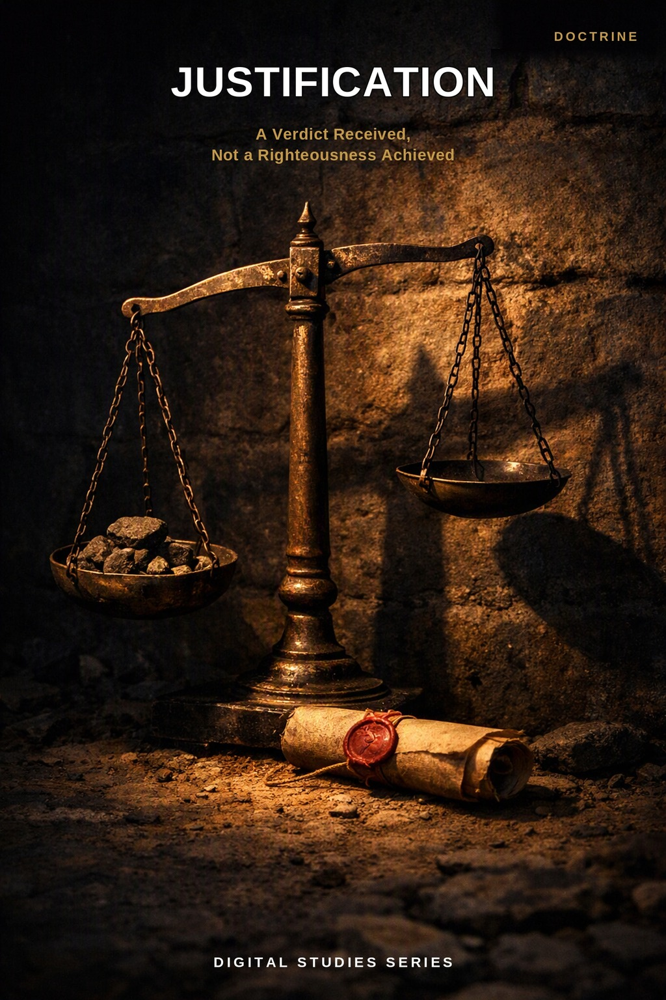
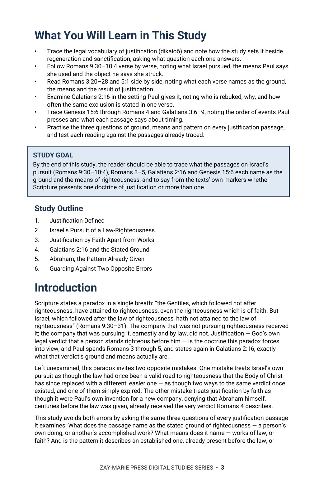
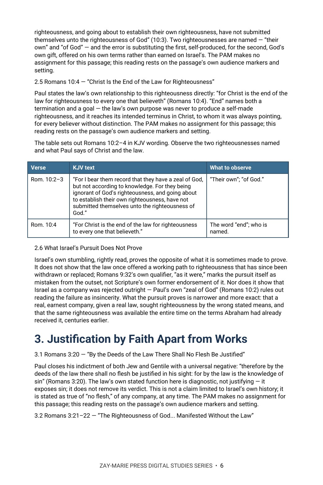

Justification
A Verdict Received, Not a Righteousness Achieved
A Biblical Examination of Israel's Pursuit of a Law-Righteousness and the Righteousness of God by Faith Under the Prophecy and Mystery Programs
Paul states the paradox in a single breath: “the Gentiles, which followed not after righteousness, have attained to righteousness, even the righteousness which is of faith. But Israel, which followed after the law of righteousness, hath not attained to the law of righteousness” (Romans 9:30–31). The company that was not pursuing righteousness received it; the company earnestly pursuing it by law did not.
This study traces justification's legal definition, Israel's own pursuit of a law-righteousness that stumbled at the stumblingstone, justification by faith apart from works in Romans 3–5, Paul's own confrontation at Antioch in Galatians 2:16, Abraham's belief counted for righteousness in Genesis 15:6, centuries before the law, and the two opposite errors a careful reader must avoid in reading Israel's stumbling alongside the Body's own standing.
A Verdict Received, Not a Righteousness Achieved
Scripture never presents law-works as the way to righteousness. Israel's own pursuit of a law-righteousness (Romans 9:30–10:4) stumbled because it was sought “as it were by the works of the law” rather than by faith (9:32); the righteousness of God by faith, apart from the law, was testified by the law and the prophets in advance (Romans 3:21) and Abraham was counted righteous by believing God, centuries before the law existed (Genesis 15:6). Asking ground, means, and pattern of every justification passage in view — is the stated ground a person's own doing or another's accomplished work; is the stated means law-works or faith; is the pattern an established one or a departure from it — keeps justification read for what each passage states: faith, never works, with the content of faith being what God revealed within each program.
Readers who have studied Study 53 (Redemption) may wonder whether this study restates that one, since both draw on Romans 3:24 in a single verse; Study 53 traces the price redemption itself names — the bondage answered and the cost paid — while this study reads the same verse only for the verdict that price makes possible, not the price itself. Readers who have studied Study 15 (Faith and Works in James and Paul) may likewise wonder whether this study duplicates that comparison, since both touch Abraham's justification; Study 15 reads James 2 and Romans 4 each within its own stated audience to show a living faith is not a barren claim, while this study reads Romans 4 and Genesis 15:6 only for what they establish about justification's own timing and ground, not for James's distinct question. Readers of Study 40 (Who Is Abraham's Seed?) may wonder whether this study's own use of Abraham repeats that one; Study 40 traces what the word “seed” names across Paul's arguments in Romans and Galatians, while this study uses Abraham only for what Genesis 15:6 and Romans 4 state about belief counted for righteousness, not to settle who his seed are. This study alone answers one narrower question: when Israel's own pursuit of a law-righteousness stumbled, what did that stumbling actually prove about the law, and what did it leave untouched about righteousness by faith, as counted to Abraham?
How These Studies Relate
Study 54 traces justification as a legal verdict — its ground in Christ's finished work for the Body, its means by faith alone, and Abraham's belief counted for righteousness before the law — against Israel's own stumbling pursuit of a law-righteousness.
Digital Studies
Study 53 — Redemption Trace the price redemption itself names in Romans 3:24, a distinct question from the verdict that price secures.
Study 15 — Faith and Works in James and Paul Read James 2 and Romans 4 each within its own stated audience, distinguishing a living faith's proof from justification's own ground.
Study 40 — Who Is Abraham's Seed? Follow what Paul means by Abraham's seed, faith, and heirship across Romans and Galatians, a distinct question from Abraham's own justification by faith.
Study 55 — Reconciled to God Romans 5:1 joins the verdict received by faith to its relational result: peace with God.
Commentary Series
Covenantal Commentary Series, Volume 1 — The Abrahamic Covenant Argues from the covenant God swore to Abraham and reads Romans 4 as a pattern of faith; Study 54 traces justification as a declared verdict from Genesis 15:6 to Paul’s letters, recording the passages without arguing beyond the text.
FROM THE PARABLES STRAND
The Pharisee and the Tax Collector uses justification language in its own Kingdom setting, distinct from the justification this study traces in Paul. Read the parable to see the word doing different work in a different setting.
Trace Faith, Never Works, Tested Against Two Responses
Justification Defined
Trace the legal vocabulary of justification (dikaioō) and note how the study sets it beside regeneration and sanctification, asking what question each one answers.
Israel's Pursuit of a Law-Righteousness
Follow Romans 9:30–10:4 verse by verse, noting what Israel pursued, the means Paul says she used and the object he says she struck.
Justification by Faith Apart from Works
Read Romans 3:20–28 and 5:1 side by side, noting what each verse names as the ground, the means and the result of justification.
Galatians 2:16 and the Stated Ground
Examine Galatians 2:16 in the setting Paul gives it, noting who is rebuked, why, and how often the same exclusion is stated in one verse.
Abraham and the Order of Events
Trace Genesis 15:6 through Romans 4 and Galatians 3:6–9, noting the order of events Paul presses and what each passage says about timing.
Ground, Means and Pattern
Practise the three questions of ground, means and pattern on every justification passage, and test each reading against the passages already traced.
Examine the Passages for Yourself
Romans 9:30–31
What Paul says each company pursued and what each attained.
Romans 9:32–33
The reason Paul gives for the outcome, and the stone he names.
Romans 10:3–4
The two righteousnesses Paul names, and what he says of Christ and the law.
Romans 3:21–22
What Paul says is manifested “without the law,” and who he says witnessed to it.
Romans 3:28
The means Paul names for justification, and what he sets aside.
Galatians 2:16
How Paul words the same point in one verse, and the setting in which he says it.
Genesis 15:6
What Abraham believed, what was counted to him, and where the verse falls in his story.
Romans 5:1
The means Paul names and the result he states.
A Verdict That Cannot Be Reopened
“There is therefore now no condemnation to them which are in Christ Jesus” (Romans 8:1).
Because the verdict rests on Christ's own accomplished work rather than the believer's ongoing performance, it cannot be reopened by a later failure any more than it was earned by an earlier success. A doctrine of justification left open to revision on the ground of subsequent conduct would trade faith's own righteousness back for the law-righteousness Israel's own pursuit shows to be a stumbling ground, not a stable one.
Preview the Study Before You Purchase
Click any page to enlarge it for reading.



What You Will Learn
See the study's goal, outline, and the question it sets out to answer.


Israel's Pursuit, Verse by Verse
See how the study walks through Romans 9:30–10:4 one verse at a time.
A Focused Study Built for
Understanding and Teaching
20-Page In-Depth Biblical Study
A careful study of justification's legal ground, Israel's own stumbling, and the righteousness of God by faith, grounded in Romans, Galatians, and Genesis.
6 Core Teaching Sections
Progress from justification's legal definition through Israel's pursuit and the righteousness of God by faith to Galatians 2:16, Abraham's pattern, and the two opposite errors to avoid.
Key Distinctions to Retain
Keep justification's ground, means, and pattern clear against Israel's own mistaken pursuit.
Review and Discussion Questions
Test the study's distinctions concerning ground, means, and continuity.
Teaching Outline
A structured framework for teaching the doctrine with precision.
Guided Further Study
Return to Israel's pursuit, justification's vocabulary, Abraham's timing, and the two programs, each traced further with directed questions.
Scripture-Tracing Exercise
Trace the study's key passages from Romans through Genesis in their own context.
Final Synthesis Exercise
Bring the evidence together in one coherent, Scripture-based explanation.
Justification
20-page digital PDF · For personal use
Want More Than a Focused Study?
Digital Studies examine particular biblical subjects and difficult passages. The 40-lesson Biblical Hermeneutics course teaches a complete, repeatable method for establishing meaning in context, determining proper assignment, and making responsible application.